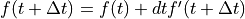
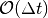
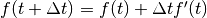
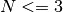
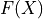
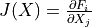
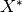
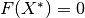
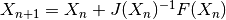

NMODL integration of ODEs¶
This is an overview of - the different ways a user can specify the equations that define the system they want to simulate in the MOD file - how these equations can be related to each other - how these equations are solved in NMODL
The user can specify information about the system in a variety of ways: - A high level way to describe a system is to specify a Mass Action Kinetic scheme of reaction equations in a KINETIC block - Alternatively a system of ODEs can be specified in a DERIVATIVE block (any kinetic scheme can also be written as a system of ODEs) - Finally a system of linear/non-linear algebraic equations can be specified in a LINEAR/NONLINEAR block (a numerical integration scheme, such as backwards
Euler, transforms a system of ODEs into a system of linear or non-linear equations)
To reduce duplication of functionality for dealing with these related systems, we implement a hierarchy of transformations: - KINETIC blocks of reaction statements are translated to DERIVATIVE blocks of equivalent ODE systems using the law of Mass Action - DERIVATIVE blocks of ODEs are translated to (NON)LINEAR blocks of algebraic equations using a numerical integration scheme
After these transformations we are left with only LINEAR/NONLINEAR blocks that are then solved numerically (by Gaussian Elimination, LU factorization or Newton iteration)
KINETIC block¶
Mass Action kinetics: a set of reaction equations with associated reaction rates
converted to a
DERIVATIVEblocking containing an equivalent system of ODEs using the law of Mass Actionsee the nmodl-kinetic-schemes notebook for more details
DERIVATIVE block¶
system of ODEs & associated solve method:
cnexp,sparse,derivimplicitoreulercnexpapplicable if ODEs are linear & independent
exact analytic integration
see the nmodl-sympy-solver-cnexp notebook for more details
sparseapplicable if ODEs are linear & coupled
backwards Euler numerical integration scheme: 
results in a linear algebraic system to solve
numerically stable
 integration error
see the nmodl-sympy-solver-sparse notebook for more details
derivimplcitalways applicable
backwards Euler numerical integration scheme:
results in a non-linear algebraic system to solve
numerically stable
integration error
see the nmodl-sympy-solver-sparse notebook for more details
euleralways applicable
forwards Euler numerical integration scheme: 
numerically unstable
integration error
not recommended due to instability of scheme
LINEAR block¶
system of linear algebraic equations
for small systems ()
solve at compile time by Gaussian elimination
for larger systems
solve at run-time by LU factorization with partial pivoting
see the nmodl-linear-solver notebook for more details
NONLINEAR block¶
system of non-linear algebraic equations
solve by Newton iteration
construct , with Jacobian 
such that desired solution  satisfies condition 
iterative solution given by 
see the nmodl-nonlinear-solver notebook for more details ***
[ ]: